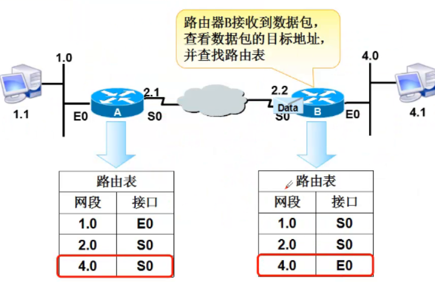

IP数据包

- 字段
- 版本（4） ：IPV4
- 首部长度（4）
- 优先级与服务类型（8）
- 总长度（16）
- 标识符（16）、标志（3）、段偏移量（13）
- 上层来的数据到IP层会被分片，这几个字段用来对数据包进行标识，是数据到达目的端重组的时候不会乱序
- TTL（8）—time to live
- 生命周期字段，经过一个路由器值减1，为0时数据包被丢弃。为了防止一个数据包在网络中无限的循环下去
- 协议号(8)
- 协议字段，是用来标识封装的上层数据是UDP还是TCP，UDP是17，TCP是6
- 首部校验和（16）
- 源ip地址（32）
- 目标ip地址（32）

- IP数据包头的大小只占20个字节，MTU：1500
广播和广播域概述
广播和广播域
- 广播：将广播地址作为目的地址的数据帧
- 广播域：网络中能接收到同一个广播所有节点的集合
MAC地址广播（2层广播地址）—》帧
- 广播地址为FF-FF-FF-FF-FF-FF —》帧
IP地址广播（3层广播地址）—》包
- 广播IP地址为IP地址网段的广播地址
- 主机部分全为1的地址 —->包
- 如， 192.168.0.0/24 —>广播地址为192.168.0.255/24
注意
- 不管是2层还是3层广播地址都是在目的地址里出现
- 广播包不能扩散出路由器，但是交换机收到广播包会扩散到所有的接口，如果这些接口是同一个VLAN
路由概述
路由含义
路由器的工作原理
- 步骤
- 主机192.168.1.1要发送数据给192.168.4.1
- 路由器A收到数据，查看数据包中的目标地址为192.168.4.1，查看路由表
- 路由器A根据路由表转发数据到S0口
- 路由器B接收到数据包，查看数据包的目标地址，并查看路由表
- 
- 路由表
问题
Q1:两台直连主机的IP地址分别配置172.16.10.5/16,172.16.1.6/16,他们可以通信吗？
- 拿ip地址和子网掩码进行与运算，得出网段号。
- 拿着别人的ip和自己的子网掩码进行与运算
- 如果得出的网段号和自己的网段号一样，就认为两台电脑在同一个网段，如果连接到同一个交换机而且在同一个VLAN,是可以通信的
- 如果是同一个网段的，就把数据发给交换机。如果不是一个网段的，就把数据发给路由器
参考文章
-
-
Previous Post
【计算机网络】--ip地址